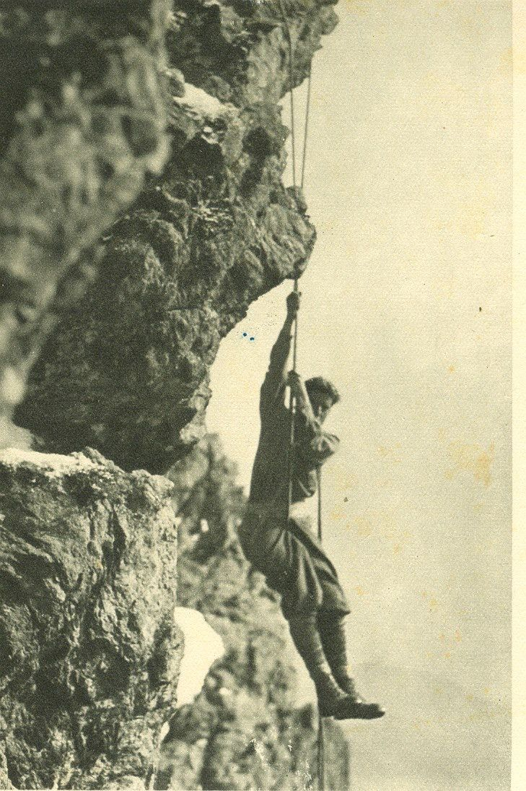
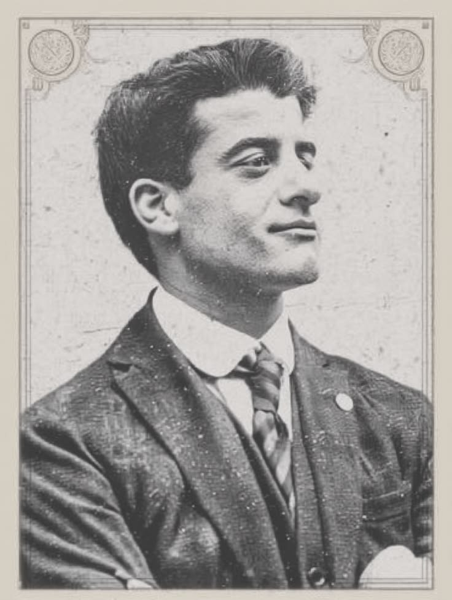
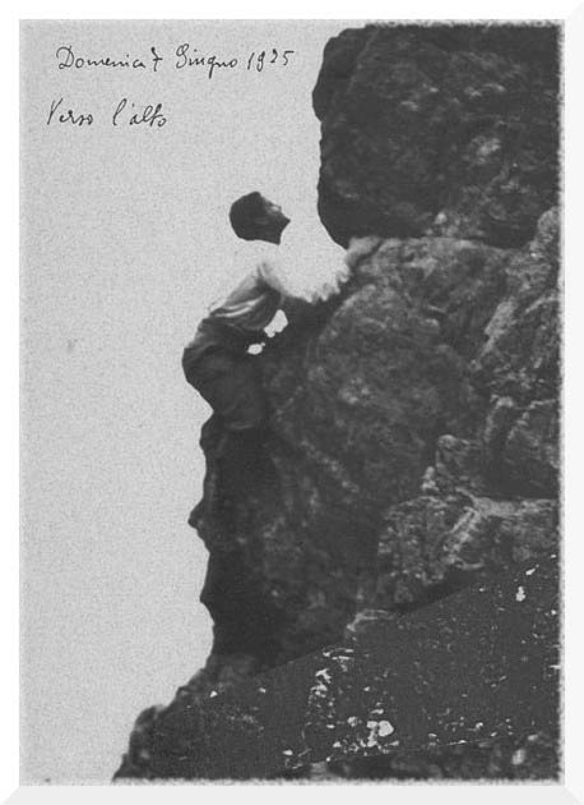
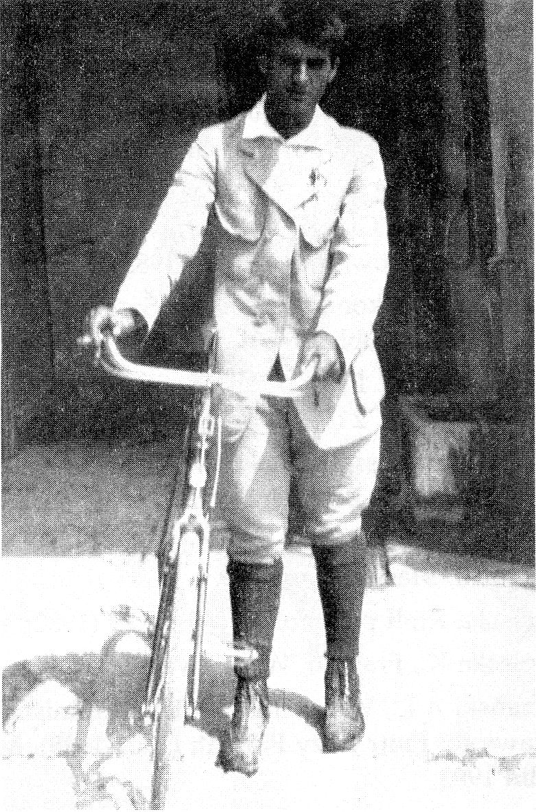

Molitvena straža
72 sata bez kompromisa, Zagreb
Uz svu buku i posao ovih 72 sata, netko treba i moliti. Upiši svoje ime i pridruži se molitvenoj straži.
Danas mole
Učitavam
Ovaj tjedan
Učitavam
Litanije svetom Pier Giorgiu
Nebeski Oče, daj mi hrabrosti da težim najvišim ciljevima, da pobjegnem od svake napasti prosječnosti.
Pomozi mi da čeznem za veličinom, kao što je to činio Pier Giorgio, i da s radošću otvorim svoje srce Tvome pozivu na svetost.
Oslobodi me straha od neuspjeha. Želim, Gospodine, biti čvrsto i zauvijek sjedinjen s Tobom. Udijeli mi milosti koje te molim po zagovoru Pier Giorgia, po zaslugama našega Gospodina Isusa Krista. Amen
Gospodine, smiluj se!
Kriste, smiluj se!
Gospodine, smiluj se!
Kriste, čuj nas!
Kriste, usliši nas!
Oče Nebeski, Bože, smiluj nam se!
Sine, Otkupitelju svijeta, Bože
Duše Sveti, Bože,
Sveto Trojstvo, jedan Bože,
Sveta Marijo, moli za nas!
Svi anđeli i sveci, molite za nas!
Bl. Pier Giorgio, moli za nas!
Voljeni sine i brate,
Potpora obiteljskom životu,
Prijatelju onima bez prijatelja,
Najkršćanskiji od svojih suputnika,
Voditelju mladih,
Pomoćniče potrebitih,
Učitelju milosrđa,
Zaštitniče siromaha,
Utjeho bolesnika,
Sportašu Božjega kraljevstva,
Osvajaču životnih planina,
Branitelju istine i vrline,
Protivniče svake nepravde,
Domoljubni građanine nacije,
Odani sine Crkve,
Odano dijete Gospe,
Gorljivi štovatelju Euharistije,
Gorljivi proučavatelju Svetoga pisma,
Predani sljedbeniče svetog Dominika,
Apostole molitve i posta,
Vodiču do duboke ljubavi prema Isusu,
Marljivi u radu i učenju,
Radostan u svim životnim okolnostima,
Jaki u čuvanju čistoće,
Tihi u boli i patnji,
Vjeran obećanjima krštenja,
Uzoru poniznosti,
Primjeru odvojenosti,
Ogledalo poslušnosti,
Čovječe Blaženstva,
Jaganjče Božji, koji oduzimaš grijehe svijeta, oprosti nam, Gospodine!
Jaganjče Božji, koji oduzimaš grijehe svijeta, usliši nas, Gospodine!
Jaganjče Božji, koji oduzimaš grijehe svijeta, smiluj nam se!
Moli za nas, Bl. Pier Giorgio Frassati,
Da postanemo dostojni Kristovih obećanja.
Pomolimo se
Oče, dao si mladom Pieru Giorgiu Frassatiju radost susreta s Kristom i življenja njegove vjere u služenju siromašnima i bolesnima. Po njegovom zagovoru neka i mi idemo putem blaženstava i slijedimo primjer njegove velikodušnosti, šireći duh Evanđelja u društvu. To te molimo po Kristu Gospodinu našem. Amen.
Ideje za molitvu
- Sveta misa, po nakani projekta ili po svojoj
- Krunica, cijela ili samo jedna desetica
- Litanije svetom Pier Giorgiu Frassatiju
- Jedno Zdravo Marijo, ako je to sve što stigneš
- Bilo koja druga molitva koju obično moliš
Zaštitnik ove godine

Sveti
Pier Giorgio Frassati
Mladi laik iz Torina, strastveni planinar koji je vjeru pretvarao u konkretnu službu siromašnima.
Poznat kao „čovjek blaženstava", cijelog je života služio siromašnima. Kada bi njegova obitelj otišla na godišnji odmor, Frassati bi ostao kod kuće govoreći: „Ako svi napuste Torino, tko će se brinuti za siromašne?"
Euharistija je bila središte njegova duhovnog života. Već od 17. godine znao je cijelu noć moliti pred Presvetim: „Isus me posjećuje svakog jutra u svetoj pričesti. Ja mu to uzvraćam kao bijednik molitvom i posjećivanjem bolesnika."
„Potičem vas sa svom snagom svoje duše da pristupate Euharistijskom stolu što je češće moguće. Hranite se ovim Anđeoskim Kruhom iz kojega ćete crpiti snagu za unutarnje borbe."


